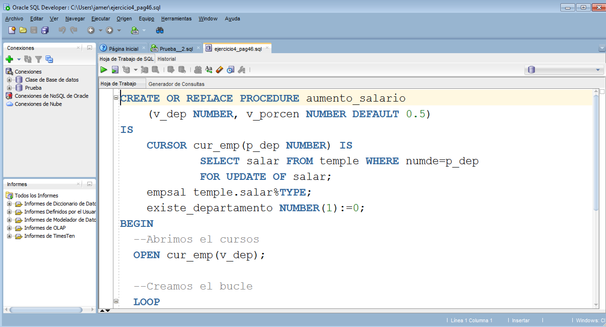

2.3.2.- SQLDeveloper.
Oracle SQL Developer es un entorno de desarrollo libre que simplifica el desarrollo y la gestión de las bases de datos de Oracle. SQL Developer nos ofrece la posibilidad de desarrollar nuestras aplicaciones PL/SQL, así como un marco de trabajo para ejecutar nuestros script de consulta sobre la base de datos.
Actualmente puede descargarse desde la página de oracle. Bastaría con buscar, dentro de las herramientas para desarrolladores (Developer Tools) SQL Developer.

. Zona de descarga del SQL Developer dentro de la web de Oracle (CC0)
Una vez lo hemos descargado, bastará con hacer doble clic en el icono del ejecutable. Actualmente SQLDeveloper solamente está disponible para sistemas operativos Microsoft Windows.

. SQL Developer (CC0)

. SQL Developer (CC0)